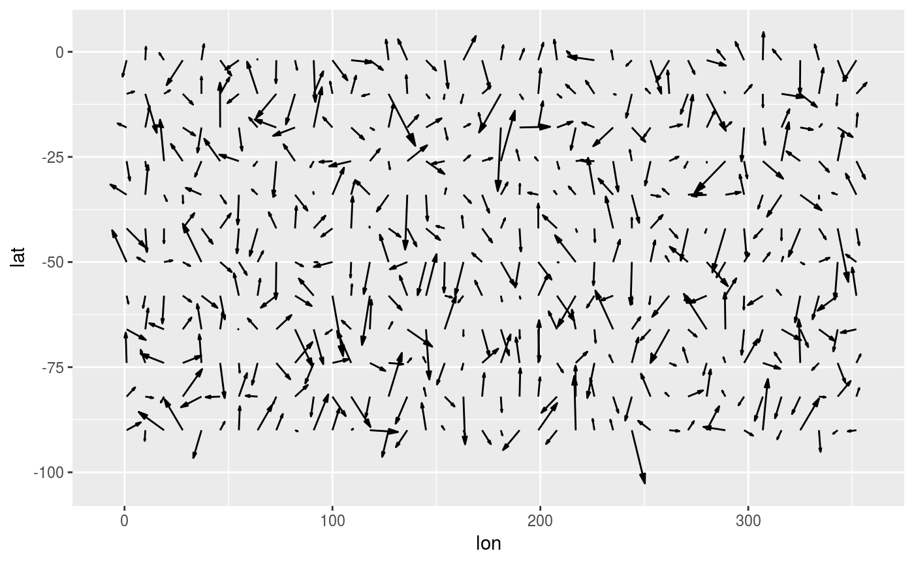
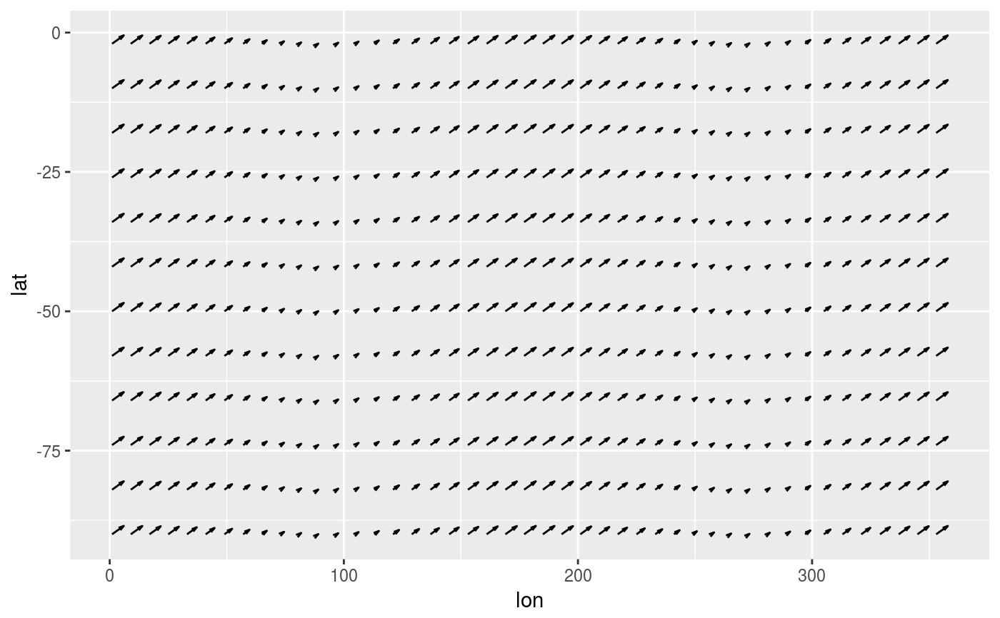
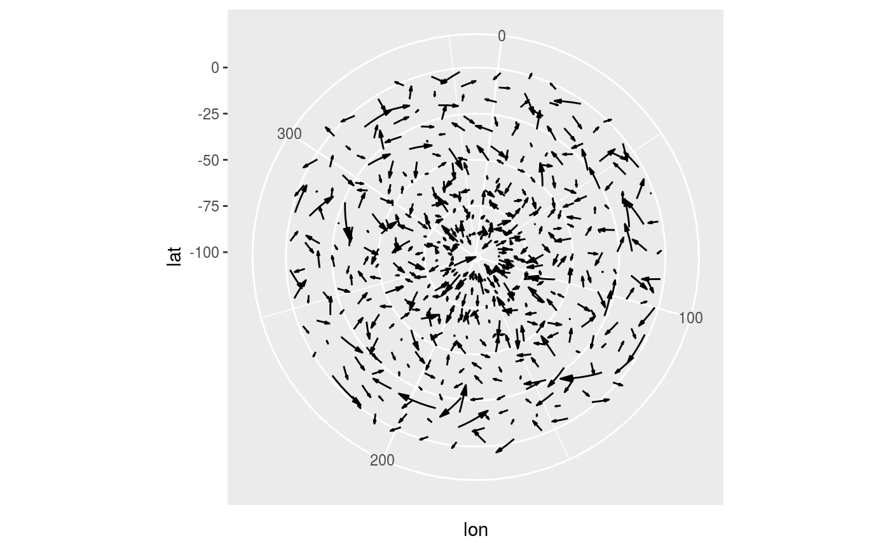
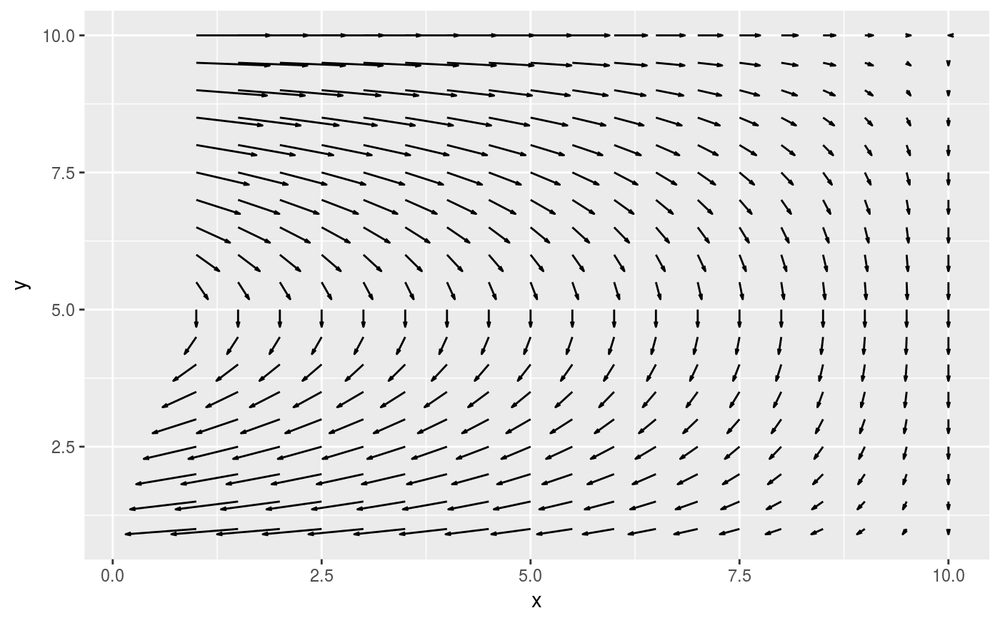

Parametrization of ggplot2::geom_segment by location and displacement that
also defaults to drawing arrows at the end of the segment. Useful for plotting
vector fields characterized by magnitude of the x and y components.
geom_vector(mapping = NULL, data = NULL, stat = StatVector, position = "identity", ..., scale = 1, scale.x = scale, scale.y = scale, min.mag = 0, skip = 0, skip.x = skip, skip.y = skip, arrow.angle = 15, arrow.length = 0.2, arrow.ends = "last", arrow.type = "open", arrow = grid::arrow(arrow.angle, unit(arrow.length, "lines"), ends = arrow.ends, type = arrow.type), lineend = "butt", na.rm = FALSE, show.legend = NA, inherit.aes = TRUE)
| mapping | Set of aesthetic mappings created by |
|---|---|
| data | The data to be displayed in this layer. There are three options: If A A |
| stat | The statistical transformation to use on the data for this layer, as a string. |
| position | Position adjustment, either as a string, or the result of a call to a position adjustment function. |
| ... | other arguments passed on to |
| scale, scale.x, scale.y | multiplicative scales for adjusting the size of the vectors. |
| min.mag | minimum magnitude of the plotted vectors |
| skip, skip.x, skip.y | numeric specifying number of gridpoints not to draw in the x and y direction. |
| arrow.length, arrow.angle, arrow.ends, arrow.type | parameters passed to grid::arrow) |
| arrow | specification for arrow heads, as created by arrow(). |
| lineend | Line end style (round, butt, square). |
| na.rm | If |
| show.legend | logical. Should this layer be included in the legends?
|
| inherit.aes | If |
Other ggplot2 helpers: DivideTimeseries,
RepeatLon, geom_arrow,
geom_contour_fill,
geom_label_contour,
reverselog_trans,
scale_color_divergent,
scale_longitude, stat_filter,
stat_na
speed <- expand.grid(lon = 1:360, lat = -90:0) speed <- transform(speed, vx = 1, vy = 0.3) library(ggplot2) (g <- ggplot(speed, aes(lon, lat)) + geom_vector(aes(dx = vx, dy = vy), scale = 5, skip = 7, skip.x = 8))# Every parameter (except skip) can be mapped to data. # this can be usefull for masking vectors with a variable # min.mag. ggplot(speed, aes(lon, lat)) + geom_vector(aes(dx = vx, dy = vy, scale.x = 5*cos(lon*pi/180)), skip = 7)# Sverdrup transport library(data.table) b <- 10 d <- 10 grid <- as.data.table(expand.grid(x = seq(1, d, by = 0.5), y = seq(1, b, by = 0.5))) grid[, My := -sin(pi*y/b)*pi/b]#> x y My #> 1: 1.0 1 -9.708055e-02 #> 2: 1.5 1 -9.708055e-02 #> 3: 2.0 1 -9.708055e-02 #> 4: 2.5 1 -9.708055e-02 #> 5: 3.0 1 -9.708055e-02 #> --- #> 357: 8.0 10 -3.847341e-17 #> 358: 8.5 10 -3.847341e-17 #> 359: 9.0 10 -3.847341e-17 #> 360: 9.5 10 -3.847341e-17 #> 361: 10.0 10 -3.847341e-17grid[, Mx := -pi^2/b^2*cos(pi*y/b)*(d - x)]#> x y My Mx #> 1: 1.0 1 -9.708055e-02 -0.84478964 #> 2: 1.5 1 -9.708055e-02 -0.79785688 #> 3: 2.0 1 -9.708055e-02 -0.75092413 #> 4: 2.5 1 -9.708055e-02 -0.70399137 #> 5: 3.0 1 -9.708055e-02 -0.65705861 #> --- #> 357: 8.0 10 -3.847341e-17 0.19739209 #> 358: 8.5 10 -3.847341e-17 0.14804407 #> 359: 9.0 10 -3.847341e-17 0.09869604 #> 360: 9.5 10 -3.847341e-17 0.04934802 #> 361: 10.0 10 -3.847341e-17 0.00000000